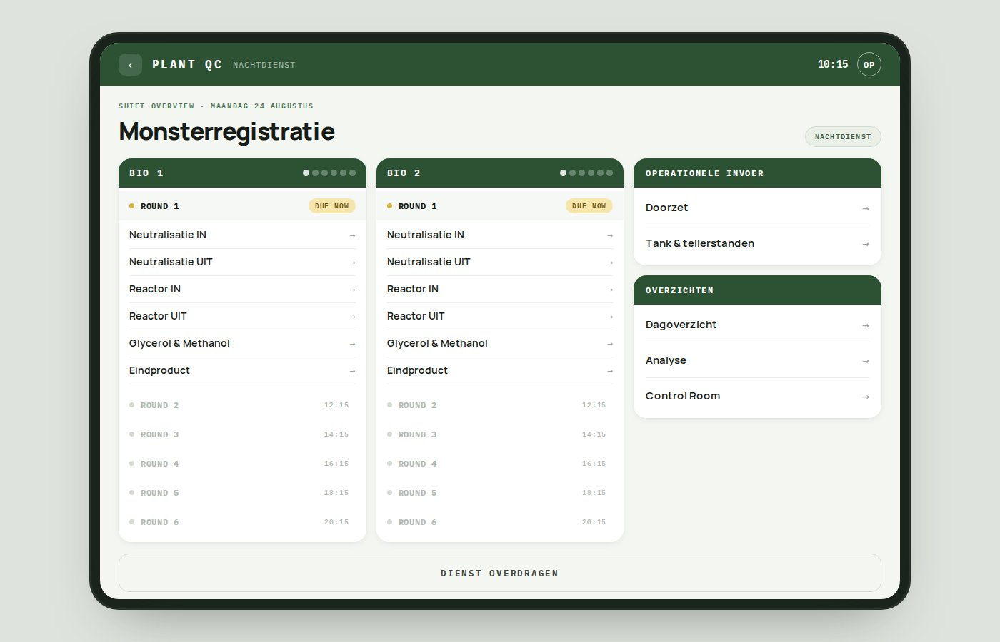
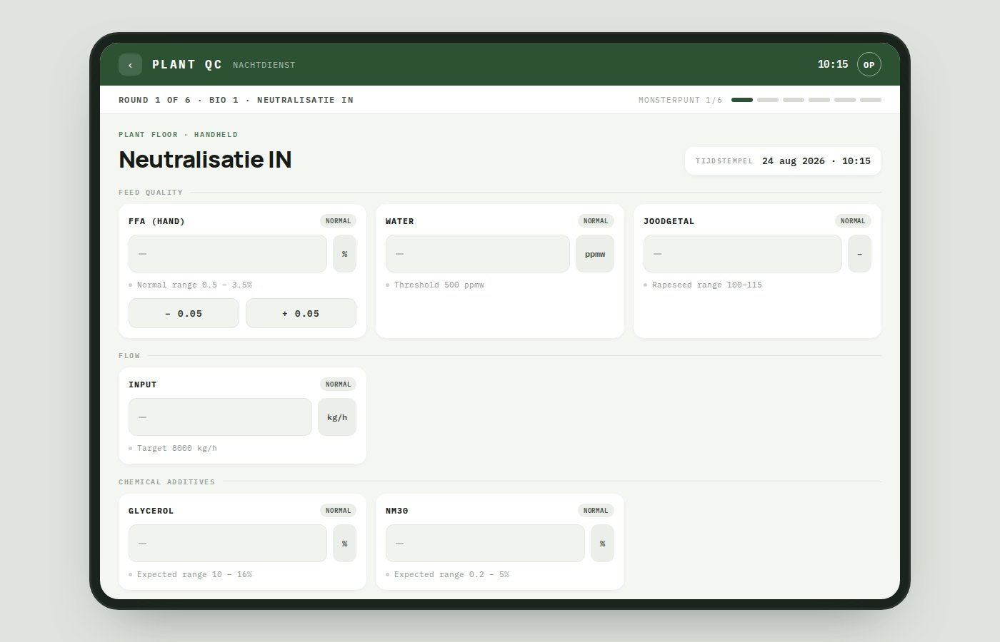
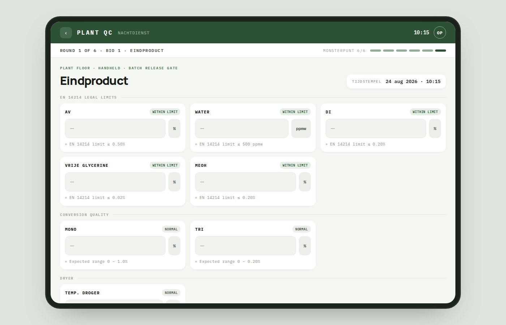
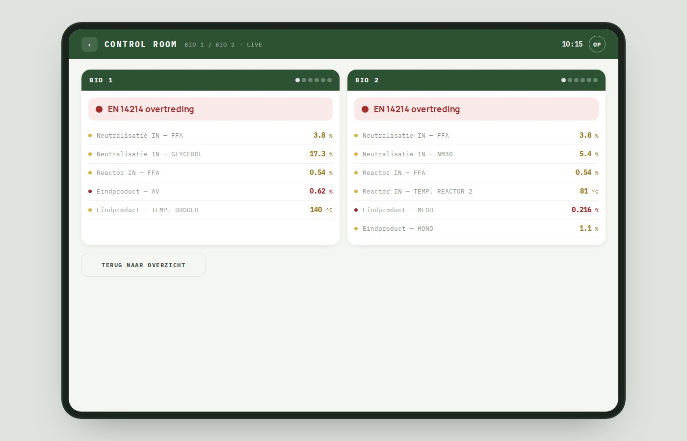
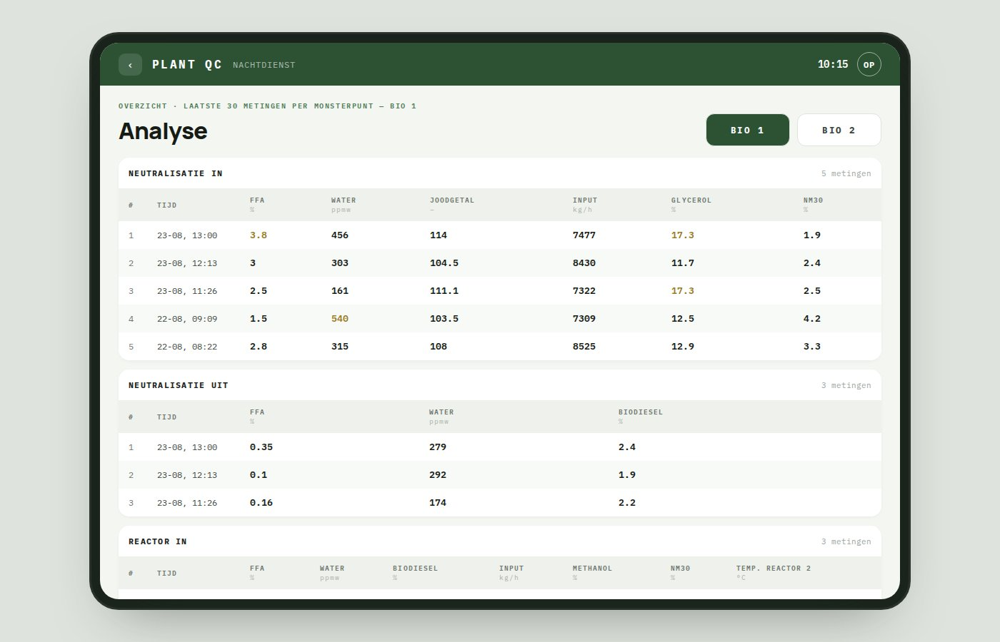

Case study · Product design & frontendYiyu Wang · 2026
Designing a monitoring platform for a 24/7 biodiesel plant — where every wrong reading has consequences
A digital platform replacing a 45-sheet Excel workbook used by operators on the plant floor of a continuous biodiesel production facility. Worked as design lead, frontend engineer, and API-contract author at Cumlaude.ai, partnered with one backend developer at a sister firm. Phase 1 fully built and deployed to the client.
At the time the research for this project began, two values in the live Excel data exceeded their EN 14214 legal limits — the European standard that governs every litre of biodiesel sold to market. Di was at 0.35% against a limit of 0.20%. Free glycerine was at 0.04% against a limit of 0.02%. No alert was generated. The system recorded the values, but it did not check them.
That finding — surfaced from forensic analysis of the workbook itself — defined what the platform had to do. The client's day-to-day monitoring system was acting as a faithful recorder of data and a silent accomplice to legal risk. This case study walks through how the research surfaced six structural gaps in the existing workflow, how those gaps shaped the platform architecture, and the design discipline required to make a high-stakes operator interface that stays calm by default and unmissable when it needs to be.
§ 01 The world
A round through the plant, at 03:00
The operator is halfway through a night shift. Somewhere behind two locked doors, two production lines are running — one on cleaner rapeseed oil, the other on used cooking oil and palm — and they will keep running until the shift after next. Continuous biodiesel production doesn't pause for a shift change. Oil enters the line at one end, comes out as EU-market-legal fuel at the other, and every few hours the operator has to prove that the number coming out is inside the law.
The round starts outside. Sample taps sit at six points along each line: at the intake, after neutralisation, at the reactor inlet and outlet, at the glycerol and methanol recovery stage, and at the final product. The operator walks the route with plastic vials, opens each tap, catches a sample, closes it. In the lab, twelve samples become between two and eight measurements each — free fatty acids by titration, water by Karl Fischer, mono/di/tri-glycerides by gas chromatography, the final EN 14214 panel by the same. Some tests finish in three minutes. Gas chromatography takes four to six hours.
Once the numbers exist, they have to go somewhere. Somewhere is a 45-sheet Excel workbook on a network drive, opened on a PC in the corner of the lab. Fourteen of the sheets are for raw measurement entry. The operator scrolls to the right sheet, finds today's date, finds the right row, and types the value into the right column. Sixty-nine of these entries per day across both lines. Six rounds. Twenty-four hours.
That system has been running for years. In the sense that data accumulates, it works. What it does not do is check anything. At the time this project began, two live values in the final-product sheet exceeded their EN 14214 legal limits — the standard that governs every litre of biodiesel sold to market. Di was at 0.35% against a limit of 0.20%. Free glycerine was at 0.04% against a limit of 0.02%. The workbook recorded both. Neither triggered anything. This case study is about the platform designed to replace that workbook — and about the design discipline required to build a monitoring tool that stays out of the operator's way during eleven quiet measurements and refuses to let them past the twelfth if it would ship illegal fuel.
§ 02 The problem
A 45-sheet Excel workbook running a 24/7 production process
The workbook has been live for years. It accumulates data. It does not check any of it.
The threshold-and-colour-coding configuration sheet has capacity for 85 or more numerical limits across all sample points and parameters. Five are populated. The other eighty are blank cells. The eindproduct sheets — the ones that record the final EN 14214 compliance panel — have zero thresholds configured for either line.
"Two live values in the eindproduct sheets exceeded their EN 14214 legal limits. The system flagged neither. No alert exists in the design."
The research surfaced six structural gaps of which the compliance failure was only the most visible. Each was confirmed against the actual data in the file rather than inferred from operator complaints — the entire research method, by necessity, was archaeological.
§ 03 The design frame
A door keeper for human mistakes, without becoming the reason for them
The design frame for this project comes from a UX principle that shows up wherever operators monitor high-stakes systems — aviation cockpits, hospital wards, industrial control rooms. A monitoring tool can fail in three ways. It can be overused — every field flagged, every measurement worth an alert, every screen shouting. Operators stop hearing warnings because the warnings never carried information. It can be underused — the check that was supposed to happen never runs, the round that was supposed to close never closes, the field that carried legal weight was left blank and the tool didn't notice. It can be misused — a value entered in the wrong place, a threshold set at the wrong number, a wrong reading filed as a right one at 03:00 because there was nothing in the interface to say otherwise.
The reference case is Eastern Air Lines Flight 401, 1972. The crew was distracted by a landing-gear indicator light that had failed to confirm gear-down status; the autopilot disengaged, unnoticed; the aircraft descended into the Everglades and 101 people died. The proximate cause was pilot inattention. The underlying cause was a cockpit in which alarms and advisory signals had accumulated over decades of retrofitting until no single warning could reliably capture the crew's attention when it mattered. Overuse produced the tolerance that made the underuse fatal. It is the founding case for what human-factors literature calls alarm fatigue, and it is the shape of failure a QA-critical monitoring tool has to design against.
The biodiesel plant is not an aircraft, but the failure geometry is the same. Six rounds per line per day. Twelve sample points. Around 150 measurement fields. Most of the time, nothing is wrong. Every so often, one number matters legally and the entire day's work depends on the operator catching it. If the tool treats the 149 quiet fields the same way it treats the one loud one, the loud one goes unheard. So the design has to distinguish them — not by shouting louder, but by staying quieter almost all of the time, so that when it does raise its voice it means something.
Everything downstream of this frame is a specific answer to one of those three failure modes. The round-based navigation prevents underuse (a round that isn't closed is visibly not closed). The EN 14214 server-side gate prevents misuse (a value that violates the standard cannot be filed without a supervisor's sign-off). The near-silent normal state prevents overuse (colour and interruption are reserved for the fields where they carry legal weight). The design does not aim to catch every possible mistake. It aims to make the mistakes that matter unmissable, and everything else, invisible.
Reading the workbook as a behavioural record
The frame was earned rather than assumed. The honest opening: no site visit happened during the engagement. Every claim about how the plant operates, how operators work, what they value, what they tolerate, what they ignore — none of it came from a conversation with a user on the plant floor. What replaced it was a six-week forensic read of the workbook itself. A 45-sheet Excel workbook with 5,000+ rows of operator-entered data on one sheet alone, plus operator commentary in remarks columns across every measurement sheet, turned out to be a denser behavioural record than a single shift observation would have been. The file documents not just what operators measure, but what they ignore, where the design intent of the original system has drifted, and where the system has accumulated structural debt.
Workbook archaeology — six findings that drove the design
Six weeks of reading the file. Each sheet was catalogued for what it recorded, where it sat in the workflow, and what the data revealed about the operators using it. The findings that mattered:
The asymmetry between the two production lines is a maturity gap, not a design choice. One line carries roughly 8,000 data rows per sheet; the other carries 650–730. The dosing calculation sheet for the larger line has 5,000+ entries spanning five months; the sister sheet for the smaller line has zero rows ever. The smaller line is dosed entirely from experience — that knowledge currently lives in the head of one senior operator and is not encoded anywhere in the system.
The round cadence emerges from timestamp clustering. Bio 1 and Bio 2 logging timestamps cluster within two minutes per round, offset from each other by roughly three hours. That means all samples are collected together, all tests are run together, all logging happens in a single sitting per line. The implication for design — the form architecture should be round-based, not step-based — came directly from this pattern.
Reactor-outlet measurements are logged 5× per day, not 6×. The 04:30 round is consistently missing on both lines. The most likely explanation is the gas-chromatography test for Mono/Di/Tri taking longer than the other tests, causing operators to skip the reactor-outlet measurement in the early-morning round. A structural scheduling gap, not random error.
The remarks column is doing research the system was never designed to capture. Operators use the free-text remarks field to record context: "measurement taken shortly after dryer problems on the smaller line"; "measurement taken just after the switch"; "issues with the heat exchanger upstream of reactor 2." This is rich, semi-structured operational knowledge — never aggregated, never searchable, never trended. The platform's design must do something with this signal.
An entire process stage is invisible. The drying step, which reduces residual water before the final product is sampled, has no dedicated entry sheet. The only data point that touches it is a single dryer-temperature reading inside the eindproduct sheet — after the batch is already made.
The configuration sheet is the system's single point of failure. Six placeholder sheets — literally named geen_1 through geen_6 ("none_1" through "none_6") — exist because the VBA layer breaks if the configuration registry has empty positions. Structural fragility encoded into the data model.
What to keep, what to change, what to automate
Kept as-is. The round structure the operators actually run — six rounds per line per day, all sample points collected together, all tests batched. This rhythm was in the timestamp clustering; it survived from the workbook into the platform. Also kept: operator judgement as the final layer on every non-legally-consequential value. The platform does not decide whether a reading is "right." It shows the operator what the expected range is and lets them file the number.
Automated. Threshold checking, colour coding, timestamping, cross-round completeness tracking, sheet-to-sheet aggregation for overviews. All the work the workbook was structurally supposed to do but had gradually stopped doing. Automated once, correctly, and in a place where the operator cannot accidentally break the configuration by editing a wrong cell.
Redesigned. Three specific practices needed reworking rather than automation. The remarks column is the operational knowledge operators wrote down and the system ignored — in the platform, remarks are still free-text but they are now attached to specific measurements, trended alongside the values, and surfaced in the shift handover summary. The invisible drying step was a genuine process stage with no interface at all — the platform adds a dedicated measurement point for it, in the round where it belongs, with its own expected range. The compliance gate was structurally identical to routine measurements in the workbook — the platform makes it different by design, with different vocabulary, different colour rules, and server-side validation. A batch cannot leave the eindproduct stage without a value that passes EN 14214, and the operator sees the change in stakes before they enter the value.
The relationships between sheets, thresholds, and macros were reconstructed by reading the spreadsheet's internal logic. The output of this thread was a written workflow map of the production process with every gap and every design opportunity annotated against each of the six process stages. It became the proposal's central diagram and the case study's central artefact:
The analytical artefact · six stages, six gaps, three cross-cutting findings · all sourced from the workbook itself
Methodology note. The workbook archaeology carried most of the research weight, supported by desk research on the FAME process and EN 14214 standard, and by workflow reconstruction from the spreadsheet's own internal logic. The API contract, typically a backend artefact, became a designer-authored document because the field names, value ranges, and structural relationships had all been extracted during the archaeology phase — it is included here as evidence of research completeness rather than as a research thread in itself. Where the research was weak: no operator was ever observed or interviewed. The proposal explicitly requested a site visit and an operator walkthrough. Neither happened during the engagement. The platform shipped with assumptions about the operator's physical environment that are evidence-grounded but unvalidated in the field — a gap Phase 2 needs to close.
§ 04 The platform
Five locations across an operator's shift
Everything above this section is diagnosis. This is what shipped. The platform organises around the physical route an operator walks during a shift — starting at the shift-overview screen, moving out to the plant floor, working at the lab bench, monitoring the control room, and closing at the shift-handover ritual. Each location is a different context: different physical constraints, different failure mode to defend against. The interfaces below are how the design frame — calm at every point where calm serves the operator, unmissable only where the law demands it — becomes something an operator actually touches.
The operator's path through one round · the platform owns three middle phases, all four interfaces are views of the same backend
Click throughOpen the interactive demo →Screens rebuilt for portfolio with invented data. Client data is under NDA.
On the form factor
The platform ships as a responsive PWA. The primary form factor is a tablet — an operator carries it on their route through the plant, at the sample taps outside and at the lab bench inside. The reasoning behind that choice is in Decision 06.
01 · At the shift start
Where the shape of the day becomes undeniable
Location: at the operator's station on shift arrivalPrevents: underuse

Shift overview · two lines, six rounds each, current round marked DUE NOW
When an operator arrives, this is the first screen. Two production lines side-by-side, six rounds ahead, each round with an expected time (12:15, 14:15, 16:15). The current round is highlighted amber with a "DUE NOW" pill; upcoming rounds are visibly queued. Under each line, the six sample points wait as tap-through rows — Neutralisatie IN, Neutralisatie UIT, Reactor IN, Reactor UIT, Glycerol & Methanol, Eindproduct. On the right, operational entries and overview screens are one tap away.
Why this shape
The workbook archaeology showed that the 04:30 reactor-outlet round was consistently missing on both lines — a structural scheduling gap disguised as random error. A screen that lays out the whole shift, with round times visible in advance and the current round unavoidable, addresses that gap directly. An operator cannot lose track of where they are in the shift. A tired night-shift operator cannot skip a round without the interface noticing.
Where the right value at the right place is the path of least resistance
Location: outside at the sample taps and inside at the lab benchPrevents: misuse

Measurement form · sectioned by chemistry, ranges printed under every field, calm status pills
Once a round starts, the operator moves through six sample points. Each measurement point opens a form organised by section — Feed Quality, Flow, Chemical Additives — with fields grouped by what a chemist would test together, not by what a spreadsheet column happens to hold. Every field has an expected range printed directly beneath it: "Normal range 0.5 – 3.5%", "Target 8000 kg/h", "Threshold 500 ppmw." A status pill on the right reads NORMAL in the calm case. The timestamp in the top-right auto-fills to the current time.
Why this shape
All three failure modes were in play in the workbook: an operator could misuse the sheet by entering a right value in the wrong column, underuse it by skipping a check that wasn't visibly required, or overuse it by treating every number as equally important. The form-first architecture — one measurement point per screen, expected range under each field, calm status pills — makes the right value at the right place the path of least resistance. There is nothing to remember. The tool remembers, and shows.
Where the vocabulary tells the operator what is at stake
Location: at the lab bench, running the final EN 14214 panelPrevents: misuse at the legal boundary

Eindproduct · same form pattern, different vocabulary, EN 14214 limits under every legally-consequential field
The Eindproduct screen looks similar to the other measurement forms. It is not. The pattern is deliberate but the language shifts. Instead of "NORMAL", every legally-consequential field is tagged "WITHIN LIMIT." Instead of "Expected range 0.5 – 5%", every reference line reads "EN 14214 limit ≤ X." The breadcrumb — Plant floor · Handheld · Batch Release Gate — names the moment. This is the one measurement point in the entire platform where the vocabulary of the interface tells the operator: this is not a routine reading, this is the gate a batch of biodiesel passes through before it is legally shippable fuel.
Why this shape
In the workbook, the eindproduct sheet was structurally identical to the other measurement sheets — same fonts, same colours, no distinguishing signal that it was the compliance record for legally-sold fuel. The Eindproduct screen makes the boundary intentional: same form pattern (so the operator does not have to learn a new interaction), different words (so the operator cannot miss the change in stakes). The one intentional friction point in a system that otherwise stays out of the way.
Where silence is the default and red means one specific thing
Location: fixed display visible from anywhere in the room, analyst view at desksPrevents: overuse

Control Room · red reserved for EN 14214 legal breach, amber for warning, everything else silent

Analyse · 30 most recent measurements, same three-tier colour scheme, pattern visible at a glance
The Control Room is the platform's alarm layer. It is deliberately silent almost all of the time. When both lines are running clean, both cards read grey with no headline. When one or more measurements are approaching a threshold, the amber warning header appears with the specific fields listed. Only when a value has crossed an EN 14214 legal limit does red — the EN 14214 overtreding pill — appear. Red is reserved for legal breach. Nothing else earns it. Beside the alert view, the Analyse screen shows the 30 most recent measurements per sample point, values displayed in the same three-tier colour scheme so that a supervisor can see at a glance whether a red value is a one-off or a pattern.
Why this shape
This is the design frame from § 03 made literal. Near-total silence in the normal state, one distinct visual language for each of three severity tiers, and red reserved for the one thing that must not be ignored. An operator who glances at the room screen and sees no red is not just seeing no red — they are seeing the platform's assertion that nothing has crossed the legal line since the last time they looked.
Location: at the operator's station, at the end of the shiftPrevents: underuse across shift boundaries
Dienst overdragen · AI summary on the left, four confirmations on the right, receiving operator named
At the end of a shift, the operator opens Dienst overdragen. The left panel is an AI-generated summary of the shift: rounds completed, breaches open, operational data status, sync status. On the right, four confirmation checkboxes: AI-summary read and confirmed / Open warnings and breaches discussed / Meter readings and throughput entered / Handoff synchronised or passed on. Below that, the specific incoming operator's name. The "Confirm all points" button is disabled until all four checkboxes are ticked.
Why this shape
The workbook had no shift-handover ritual at all. Issues that started on the night shift could quietly propagate into the day shift because there was nothing in the design that said "one shift's work is now formally over." The handover screen makes that transition load-bearing. The AI summary makes what happened this shift visible without asking the outgoing operator to remember or write. The four checkboxes make it undeniable: you did not confirm the handoff without acknowledging the state of the plant. The receiving operator's name binds the handoff to a specific person on the other side.
Five locations, one design principle. The workbook this platform replaced ran a 24/7 process with five configured thresholds and zero EN 14214 alerts. What shipped instead is a tool that stays out of the operator's way during 149 quiet measurements and refuses to let them past the one measurement that matters legally — the door keeper the shift needed, and nothing more.
§ 05 Six design decisions
Where the file pushed the design
Six decisions worth foregrounding. Each had an alternative, each carried a trade-off, and each was made in response to specific evidence from the workbook rather than to a design preference. Two are methodology decisions — how the research was done and how the API was authored. Four are failure-mode decisions — each one closes one of the three geometries of misuse, underuse, or overuse.
01
Read the workbook as the primary research instrument
Methodology decision · workbook archaeology in place of a site visit
With no site visit and no operator interviews, the workbook had to substitute. The decision was to treat it not as a data dump but as a behavioural document — to read what operators actually do by reading what they actually enter, where they enter it, what they ignore, and where their workarounds show through. Six structural gaps surfaced this way, including the live EN 14214 compliance failure no one had flagged.
The alternative would have been to wait for a site visit, conduct interviews, then design. Given the engagement's eight-week timeline and the client's stated need for a working prototype, waiting was not available. The decision was to treat the file as enough research to start designing with, while naming the gaps in research scope explicitly inside the proposal.
Trade-off
Some things about the operator's physical environment — handheld choice, glove-friendliness, lab-bench layout, control-room ambient lighting — are evidence-grounded but unvalidated. The platform makes commitments about the physical environment that only a site visit would have firmed up. A later phase needs to close that loop.
02
Round-based form architecture, not step-based
Prevents underuse · an unrun round is visibly not run
The intuitive way to structure a measurement system is by process stage — twelve sample points, twelve forms, navigate to the one you need. The platform went the other way. The home screen shows rounds; opening a round reveals the six measurement forms for that round on a single screen. The operator works through them in whatever order suits the lab's actual sequence — gas chromatography last because it takes longer, free-glycerine first because the reagent is sitting ready — not in an order the software prescribes.
The evidence for this came from timestamp clustering. Every submission in the legacy file clustered within two minutes of the others in the same round, across both lines. That meant the operator wasn't logging at the moment of each individual test — they were batching the entries and entering them all together once the lab work was done. A step-based UI would have made them navigate twelve times for one round. A round-based UI matches their actual rhythm.
A second design commitment follows from the same finding: an unscheduled-measurement option must be available at all times. Operators take extra samples when something looks unusual. If the platform only supports measurements that fit the schedule, it forces them to either skip or work around the system. Unscheduled entries use the same forms and the same validation, with a clear marker in the audit trail.
Trade-off
Round-based UIs require a more sophisticated state model — what counts as "complete," when a round auto-promotes, how late submissions are handled, what happens if an operator opens a round and walks away. All of these have to be defined explicitly, where a stateless step-based UI would just have shown a form.
03
Four interfaces, one backend, design follows location
Prevents misuse · the interface adapts to where the operator physically stands
The operator's day involves at least three distinct physical environments — outside at the sample taps, inside at the lab bench, at a desk for shift handover — and a fourth environment for the shift supervisor, the control room. The platform exposes a different surface in each location, but all four are views of the same backend. § 04 walks through what each location's interface looks like and why.
The alternative would have been to ship a single responsive web app and let one design adapt across devices. The decision against that came from the workflow: a glance screen and a one-handed entry screen are not the same artefact at different sizes. They have different reading distances, different attention demands, different acceptable amounts of detail.
Trade-off
Four interfaces means four sets of components to maintain, four sets of edge cases, four QA passes. The discipline holds because they share a backend, but the design surface is multiplied. For a single-IC frontend role on an eight-week timeline, that's load to manage carefully.
04
EN 14214 as the one intentional friction point
Prevents misuse at the legal boundary · different vocabulary at the compliance gate
The platform's general posture is to stay out of the way. Around 150 individual measurement fields across the twelve sample points show no colour at all in the normal case — the entry surface is white and quiet. Colour appears only where a threshold exists for that field, and only when the value crosses it.
The exception is the EN 14214 compliance gate at the final-product stage. On every eindproduct submission, five legally fixed limits are checked server-side. A breach returns an HTTP 422 with the specific field, value, and limit named, and the UI displays a red banner reading "Value exceeds EN 14214 limit — supervisor approval required before batch release." The operator must confirm they have seen the warning. The control room sees the flag immediately. A separate supervisor-approval endpoint exists for the sign-off path.
This is the only place in the platform that interrupts the user. The decision is intentional and behaviourally grounded: in a system where most signals are advisory, the one signal that carries legal weight needs to look and feel different from all the others. Treating an EN 14214 breach the same as a soft threshold warning would have collapsed the hierarchy — and we would have ended up reproducing the original problem in a prettier shell.
Trade-off
The friction is hard-coded. There is no override at the operator level — only supervisor sign-off can release a batch. If the supervisor isn't reachable when a breach occurs (night shift, weekend, holiday), the platform creates a bottleneck the Excel system did not. Phase 2 of the rollout has to address what happens in that case — an escalation path, a deferred-approval flow, or an explicit "hold for next shift" state.
05
The API contract as a designer-authored artefact
Methodology decision · scope discipline through backend-schema authorship
Most projects of this shape leave the API contract to the backend developer. On this one, the contract was drafted by the design lead — directly from the workbook archaeology, before the backend developer started building. The reason was pragmatic: the field names, value types, EN 14214 limits, sheet-to-endpoint mappings, and the structural differences between the two production lines had all been extracted during the research phase. Writing them up as a versioned contract was faster than briefing them.
The contract names seven open questions, four of which were answered from the file (sample-point identifiers, EN 14214 numerical limits, sheet-to-endpoint mapping, payload structure for the differing measurements between the two lines) and three of which were routed to the CTO (whether the recovery-stage endpoint should use a line discriminator or split into two routes; whether EN 14214 checks should also run client-side for UX or remain server-only; how supervisor identity is verified for the sign-off path).
One specific finding from the contract drafting worth naming: the recovery-stage measurements differ structurally between the two lines — different tank identifiers, additional water-in-methanol tracking points on the line that handles dirtier feedstock, the same conceptual sample point producing genuinely different payloads. The natural design instinct was to unify with a line discriminator. The contract flagged that the structural difference might justify separate endpoints. That kind of question is hard to surface without the source-data analysis the contract drafting required.
Trade-off
Drafting the API contract from the design side requires backend literacy and discipline. It works on a small team where the design and engineering surfaces are not adversarial. On a larger team it would risk overstepping or producing a contract the backend has to renegotiate. The decision worked here because the engagement was a two-person build with high trust.
06
Tablet as the primary form factor
Prevents underuse · the device follows the operator’s physical route
The default assumption in industrial QC tooling is a laptop at a workstation. Operator walks a round with a paper form or clipboard, comes back to the desk, types the numbers in. The workbook this platform replaced followed exactly that pattern. The decision on the new platform was to make the primary form factor a tablet that travels with the operator on the round, not a workstation the operator returns to.
The reasoning was that any tool the operator has to walk back to is a tool that competes with the round itself for the operator’s time. If a measurement is taken outside at the sample tap and the log is on a laptop inside at a desk, the operator has to either carry a written value back or make a mental note. Both are misuse vectors: transcription errors, misremembered timestamps, or the entry simply never happening if the operator gets pulled to a task before returning to the desk. A tablet closes the loop — the value gets logged where and when it’s measured, timestamped automatically, with the range reference right there on the same screen as the input.
The alternative was a phone-first PWA. Phone is more portable and every operator already carries one, but the measurement forms with side-by-side range references and the control-room dashboard both need horizontal room to breathe. A phone would have forced two design compromises: cramped forms on the plant floor and unreadable overview screens in the control room. Tablet is the compromise that works for the work — mobile enough to follow the operator, large enough to hold a measurement form and its context on one screen. It also happens to be the industry standard for continuous-process plant floor tools, which lowered the training cost of adoption.
Trade-off
Tablets are more expensive per operator than sharing a workstation, and they need charging, cleaning, and rugged cases in a plant environment. On the small production sites this platform targets, that cost is easily absorbed. On a larger site with dozens of operators per shift, the calculus would need revisiting.
§ 06 What shipped, and what I'd do differently
Honest about both
Phase 1 shipped in full. The platform is deployed to Vercel, tested internally with the team, and transferred to the client's GitHub organisation. An administrator setup guide and operator playbook shipped alongside the build, both translated into Dutch. The five locations walked through in § 04 are all live — the shift overview, the twelve measurement forms, the batch release gate, the control room dashboard with auto-refresh, and the shift handover form. The EN 14214 server-side compliance gate and the supervisor sign-off endpoint are wired end-to-end.
What's not yet built sits in Phase 2 and Phase 3. The smart recipe calculator (auto-populating the dosing tool from live feed measurements) was held until the working session with the senior operator could validate the dosing formula. The supervisor approval UI for EN 14214 breaches exists in the data model but not yet in the front-end flow. The AI shift summary is scoped but unbuilt. The predictive quality alert — using reactor-outlet trends to predict final-product failures 4–6 hours ahead — was deferred to Phase 3 because the training data only starts accumulating from go-live.
Quantitative adoption outcomes are not available. The consultancy engagement is ending before the platform's uptake window will close, and the client's commitment to continued use is uncertain on those grounds rather than on the platform's merits. I would rather say that plainly than fabricate a percentage.
What I'd change
Three things, in order.
I would have pushed harder, earlier, for the site visit. Naming the gap in the proposal was correct, but proposals are not commitments. A two-day visit in week three would have validated the handheld choice, the glove-friendliness assumption, the lab-bench layout, and the control room's ambient lighting. None of those are guesses I'm proud of, even when the file supported them.
I would have run a live walkthrough with an operator before the API contract was finalised. The contract has seven named open questions; some of them — particularly the recovery-stage endpoint split — are decisions that an operator's actual workflow would have answered cleanly. The CTO is a strong proxy, but not the user.
I would have instrumented the platform for outcome measurement from day one. Round-completion rates, time-from-test-to-submission, threshold-breach counts by line and parameter, supervisor sign-off latency. Even when the data isn't being looked at, having it there means the next phase of the project starts with a baseline rather than re-establishing one. The seasonings project on the parallel track of my work has the same lesson; I'm now disciplined about it on every new engagement.
![Dienst overdragen screen. Left panel: AI-generated summary of the shift with sections for Rondes (rounds completed: BIO 1 0/6, BIO 2 0/6), Afwijkingen (2 EN 14214 breaches and 9 warnings open), Operationele invoer (Doorzet not yet entered, Tellerstanden G5-G8 not yet entered), Synchronisatie (all input synced with lab system). Right panel: four confirmation checkboxes: AI-samenvatting gelezen en akkoord, Openstaande waarschuwingen en overtredingen besproken, Tellerstanden en doorzet van de dienst ingevoerd, Wachtrij gesynchroniseerd of doorgegeven. Below the checklist, the receiving operator's name (Dagdienst · Operator 2) and an optional operator note field. Confirm button disabled until all four checkboxes are ticked.](handover.jpg)